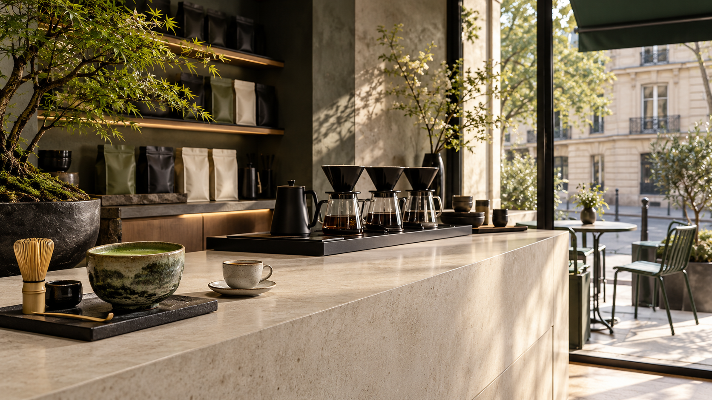

Espresso
Court, équilibré, extrait pour révéler le grain.
Un comptoir minuscule et précis, pensé pour ralentir le temps entre espresso, matcha et grains rares.
Prendre une pause
Une adresse sobre où le produit, le geste et l’échange avec le barista prennent toute la place.
One Sip cultive une approche attentive du café. Chaque boisson se prépare à la commande, dans un espace réduit à l’essentiel et ouvert sur la rue.